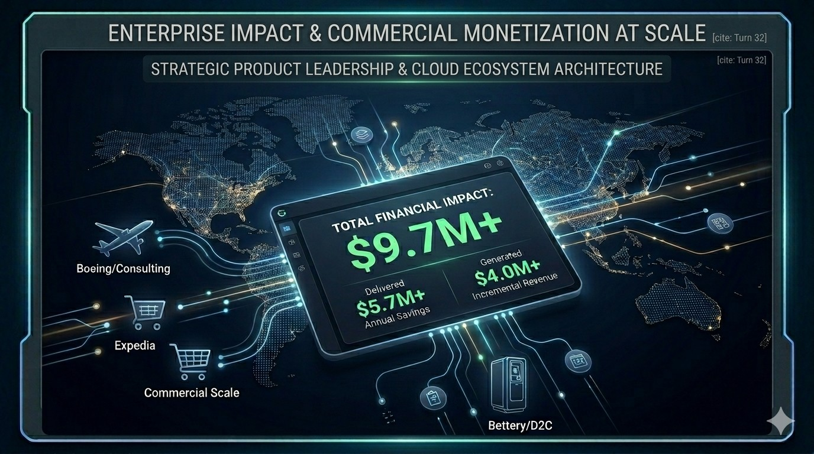
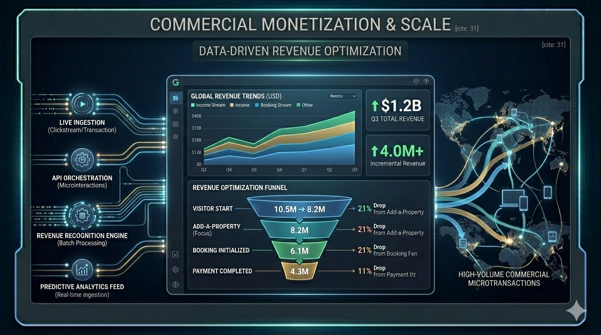
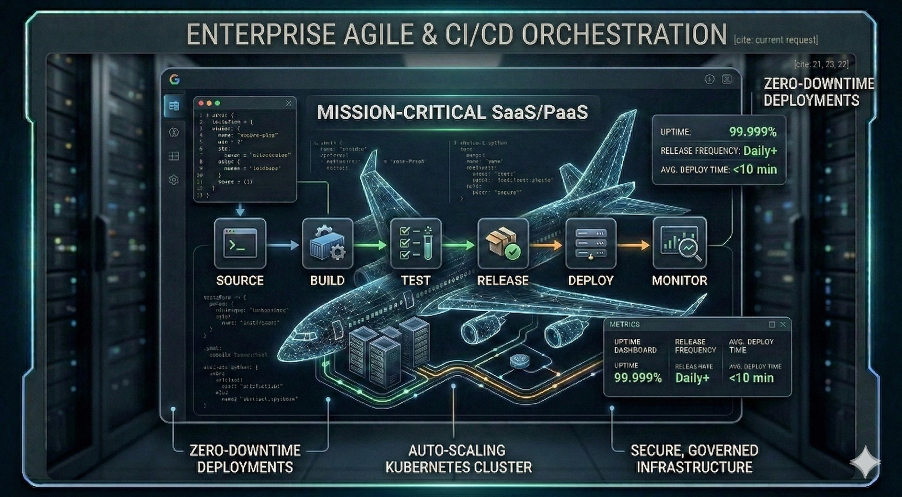
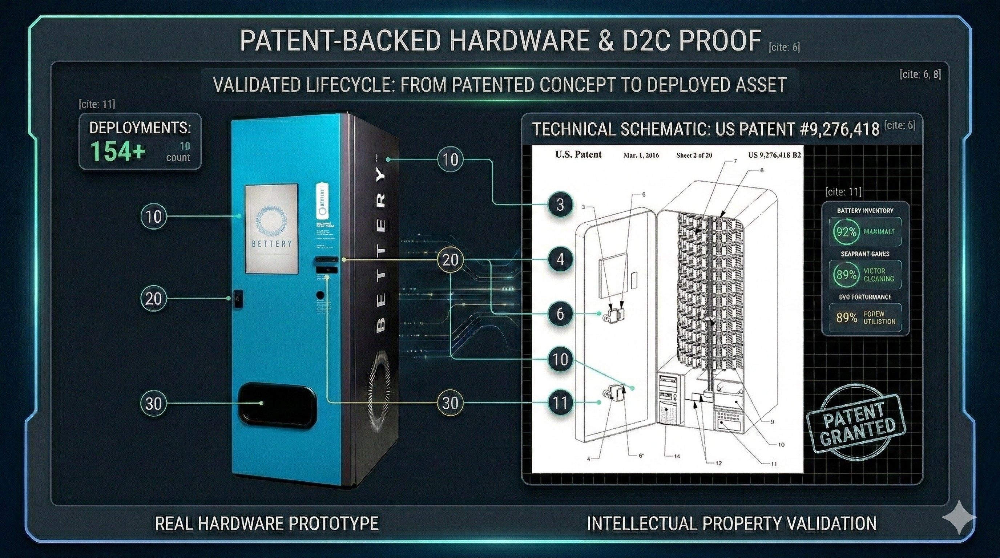
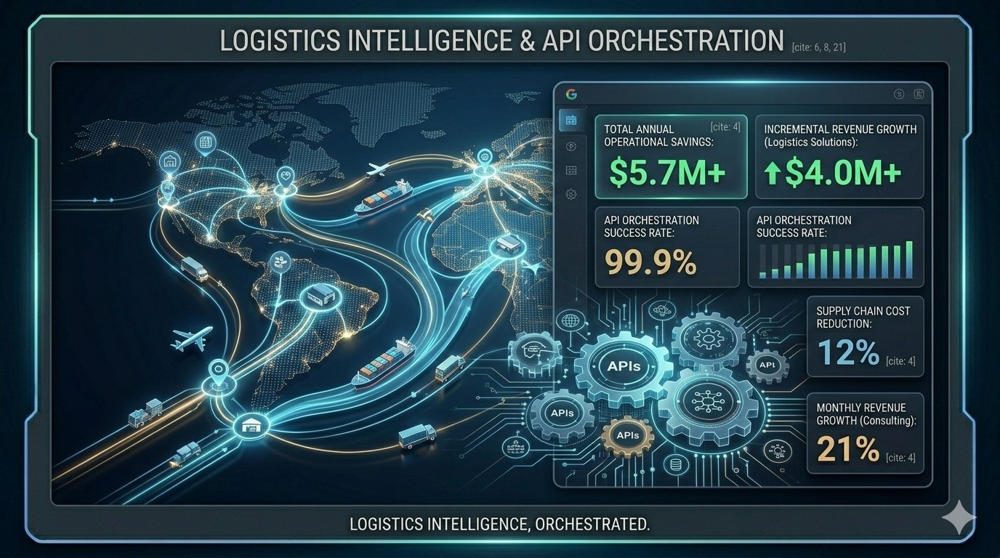

Enterprise Product & Cloud SaaS Leadership
Enterprise Platform Strategy
Senior Product Management leader with over 15 years of commercial experience—backed by a foundational background in military intelligence and secure communications—driving massive scale, modernization, and monetization across B2B, B2C, and D2C cloud ecosystems. Proven track record of architecting scalable infrastructure, mastering Agile product delivery across enterprise SaaS/PaaS portfolios, and deploying data workflows that directly impact the bottom line—delivering over $5.7M in annual operational savings and $4M+ in incremental revenue at scale.
Core Competencies & Capabilities
- Enterprise SaaS/PaaS & Scale: Led aggressive modernization of legacy infrastructure and mission-critical SaaS/PaaS ecosystems. Championed Agile and CI/CD methodologies across large-scale engineering organizations to drastically reduce defect rates, accelerate time-to-market, and optimize technical debt.
- Data Architecture & Enterprise AI: Directed 0→1 deployments of enterprise SaaS platforms (Salesforce) across multiple lines of business. Established robust data governance and deployed AI-powered workflows that centralized 360° customer/partner views and drove a 32% increase in partner satisfaction.
- Revenue Growth & D2C/B2B Monetization: Engineered scalable onboarding features, automated messaging platforms, and complex API integrations. Orchestrated full-lifecycle development for direct-to-consumer (D2C) tech-enabled products, optimizing conversion funnels and generating multi-million dollar commercial growth.
- High-Stakes Operational Leadership: Forged in rigorous, intelligence-driven military environments, bringing unmatched operational discipline to bridge the gap between highly secure infrastructure requirements and rapid commercial deployment expectations.


Commercial Scale & Monetization
Architected automated messaging and API orchestrations that drove $4.2M in annual savings and generated $4M+ in incremental revenue across highly complex B2B2C funnels.

Mission-Critical SaaS/PaaS
Led large-scale platform modernization and championed CI/CD methodologies across 75+ member engineering organizations, drastically reducing defect rates and technical debt.

D2C Tech-Enabled Products
Directed end-to-end R&D and secured utility patents (US #9,276,418) for automated consumer systems, successfully bridging physical hardware integration with scalable cloud infrastructure.

Logistics & Cost Controls
Engineered logistics intelligence systems and API orchestrations that successfully delivered a 12% cost reduction while driving 21% monthly revenue growth.